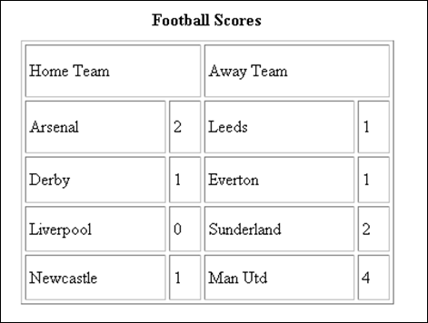
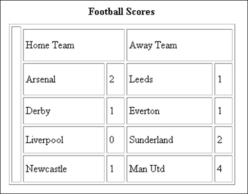

The ROWSPAN and COLSPAN Attributes
Suppose you wanted a table like this one:

Here, the two cells at the top stretch across the two cells below it. For a complex table of different cell size like this, you can use ROWSPAN and COLSPAN. This can get quite complex. But remember that Columns go down, and Rows go across. To have one big cell stretch horizontally across two smaller cells, the code would be this:
<TR>
<TD COLSPAN = 2>Home Team</TD>
<TD COLSPAN = 2>Away Team<BR></TD>
</TR>
The attribute COLSPAN has the value of two because one TD cell is going to
stretch across two columns. We have 4 columns in our table above, so the first
TD tag will span two columns, and so will the second one.
If we add some of the other table tags, you might get a better idea of what's
going on.
<CAPTION><B>Football Scores</B></CAPTION>
<TR>
<TD COLSPAN = 2>Home Team</TD>
<TD COLSPAN = 2>Away Team<BR></TD>
</TR>
<TR >
<TD>Arsenal</TD>
<TD>2</TD>
<TD>Leeds</TD>
<TD>1</TD>
</TR>
If we wanted one big cell to stretch over all our rows, running down the left side, we would use ROWSPAN. The code would be this (the <BR> tag gets you a blank cell):
<TR>
<TD ROWSPAN = 6><BR></TD>
</TR>
And this would be the effect:

You might have noticed that although the code was this:
<TR>
<TD ROWSPAN = 6><BR></TD>
</TR>
The number of rows in the table was actually only five. So why set the ROWSPAN to 6? Well, it's because we had 5 sets of TR tags in our table, plus the one TR tag we added for the ROWSPAN making 6 in total. The code for the whole table above looks like this:

There's no doubt about it, though - setting up a complex table with cells spanning across other cells can be a tricky business when you're coding by hand!
In the next lesson, you'll learn about table attributes.